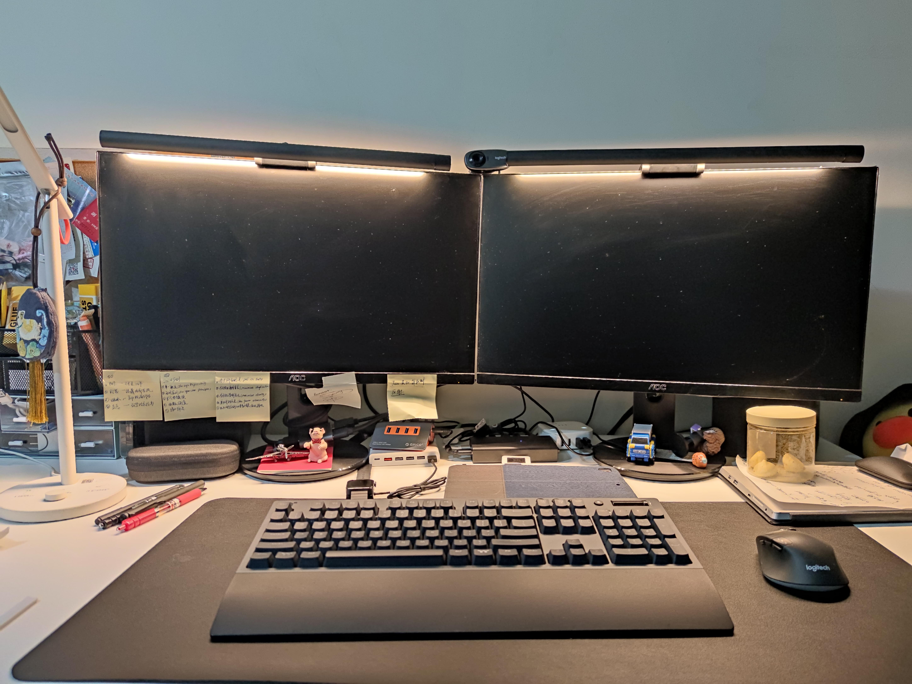
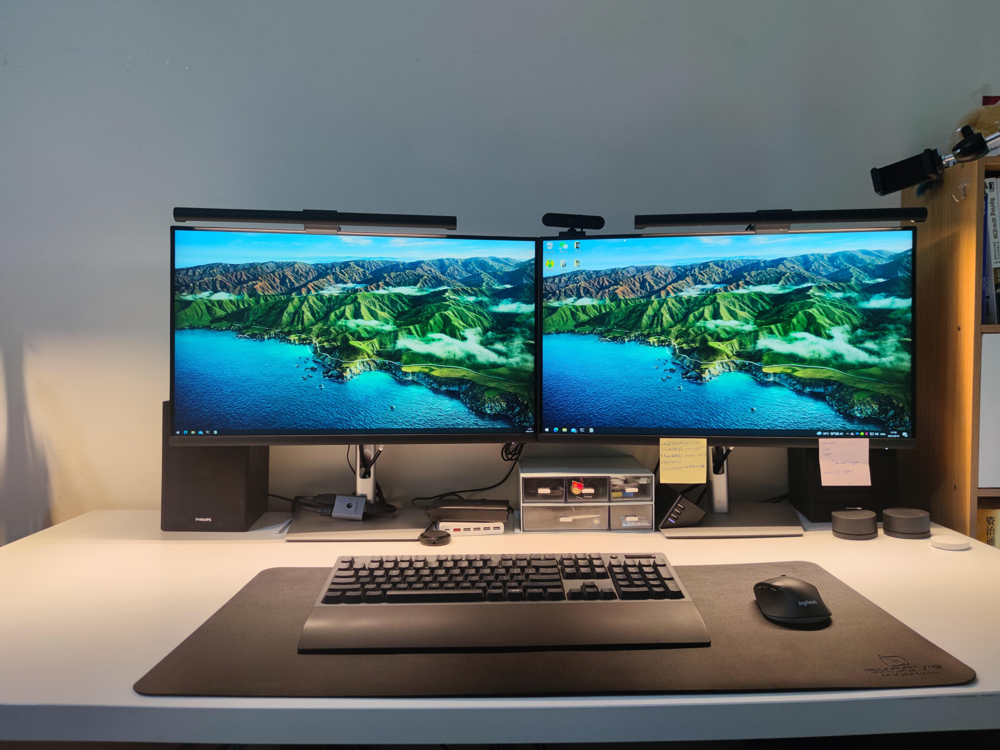
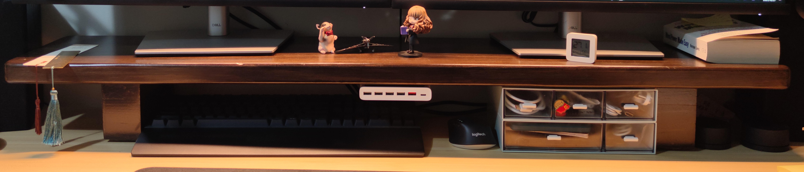
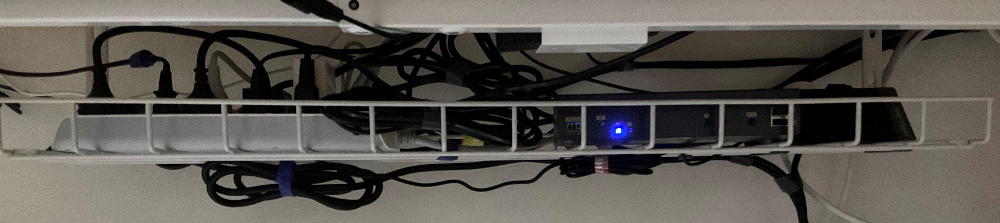
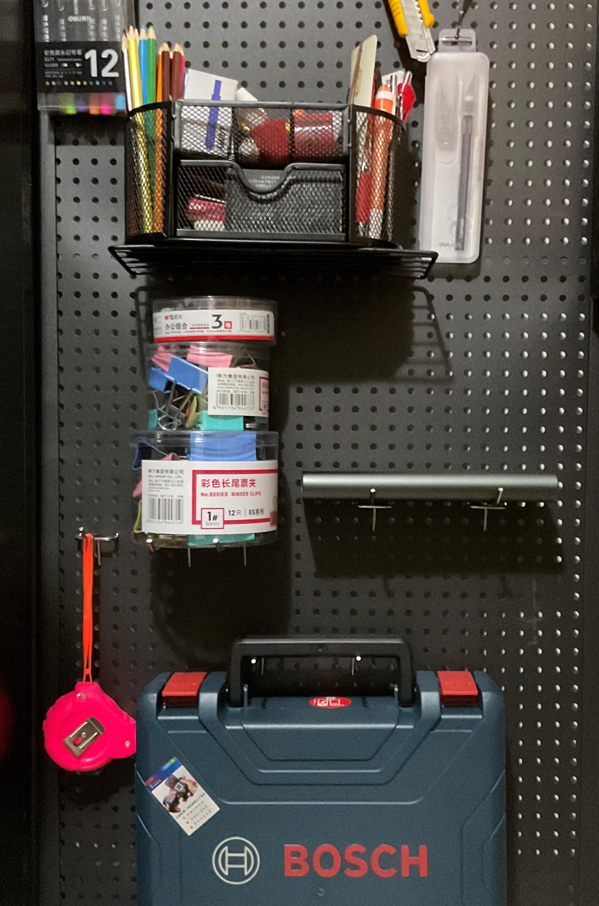

Desk Makeover 1.0
On June 2, 2021, I was released from quarantine and finally allowed out. After half a year away, I was back in my little home base.
At that point, it was clear that my next job would allow long-term work from home (WFH), so I decided the desk setup needed an overhaul — something I’d be happy living and working at every day, a setup that would truly please me.
The Old Setup
First, a look at the old desk:

Main components:
- 23.8-inch monitor (AOC Q2490PXQ) x2
- Monitor light bar (Baseus) x2
- Webcam (Logitech C310) x1
- Desk lamp (Xiaomi Mijia LED Smart Desk Lamp 1S) x1
- USB Hub (ORICO All-Aluminum USB 3.1 Gen2) x1
- HDMI switch (Wavlink 2-in-1-out 4K HDMI Switch) x1
- KVM switch (UGREEN KVM Switch HDMI 2-in-1-out 4K) x1
- USB charger (Xiaomi Original 60W USB Charger Fast Charge, 6-port output, QC3.0) x1
- Temperature and humidity sensor (Xiaomi Mijia Bluetooth Thermometer 2) x1
- Power strip (BULL Anti-overcharge Power Strip with Multiple USB Ports) x1
- Microsoft Designer Wireless Bluetooth Mouse x1
- Keyboard (TT G821 Blue Switch) x1
- Logitech M720 Mouse x1
- Mouse pad (Xiduoo Elegant Black BAS1801-01) x1
- Desk (IKEA Linnmon 150x75 tabletop + adjustable legs) x1
- Office chair (Lianfeng DS-177 Black) x1
Main issues:
- The monitor resolution was 2K. Even though 2K is decent, I had always longed for 4K. Coding on a 2K screen just didn’t feel right.
- The webcam did not support Windows Hello.
- The desk was too cluttered.
Phase One: The Upgrade
Monitor
The first priority was solving issue #1 — finding a monitor that would make typing code a joy.
Step one: determine the size. My desk is 75 cm wide, and the previous 23.8-inch monitors felt comfortable, so I targeted 23.8 to 27 inches.
Step two: determine the resolution. The previous monitors were 2560×1440, which was a noticeable improvement over 1080p, but text still looked slightly soft and jagged. Since my primary use case is writing code, text clarity matters a lot to me, so I went with 4K resolution.
Step three: identify other requirements. Since I spend long hours in front of a screen, eye comfort was important to me.
Step four: choose a brand. I personally lean toward established brands like DELL, LG, and AOC (which I had used before).
My final choice was the DELL P2721Q.
I should mention that my first purchase was not actually the DELL P2721Q — it was the AOC U27U2D. On paper, the AOC U27U2D met all my requirements, but after a day of use I felt slightly dizzy, so I returned it within the 7-day no-questions-asked window and ordered the DELL P2721Q instead. When it comes to monitors, what matters most is that your eyes feel comfortable.
Monitor Light Bar
The previous light bar was from Baseus, and its power and adjustment controls were located on the bar itself, meaning I had to stand up every time I wanted to turn it on or off — very inconvenient.
I switched to Xiaomi’s monitor light bar. Its biggest advantage is that it does the job well and costs little.
Webcam
My old Logitech C310 was purchased in 2017 and saw most of its use in 2020. Its main purpose was Zoom video calls, and that was about it.
The main reason for upgrading the webcam was to get Windows Hello support. I use 1Password to manage nearly all my passwords, and with Windows Hello I would no longer need to type a PIN or password every time.
There are very few webcam options that support Windows Hello — though Taobao does carry a number of DIY-converted models. Here are the Windows Hello-compatible cameras I was aware of:
- Intel RealSense SR300 / F200 (3D structured light)
- Lenovo 500 (infrared)
- Logitech C1000e (infrared)
I went with the Lenovo 500 (priced at 399 CNY at the time), mainly because it was much cheaper than the Logitech C1000e (1,499 CNY on JD.com), and I had not yet discovered the Intel RealSense F200 (available on Taobao for around 200 CNY).
Summary
Phase One was completed in June 2021. It focused primarily on upgrading and replacing a handful of hardware components.

Phase Two: The Makeover
On June 21, 2021, I joined my current company and began working from home full-time.
Phase Two was triggered by the following:
- In October 2021, I noticed the IKEA Linnmon tabletop had warped.
- The office chair had also started to lean to one side.
Goals for Phase Two:
- An electric sit-stand desk
- A gaming chair or ergonomic chair
- A wireless, clutter-free desk surface with as few cables visible as possible
Electric Sit-Stand Desk
Why a sit-stand desk?
Prolonged sitting is seriously harmful — it can cause poor blood flow to the brain, muscle aches throughout the body, neck stiffness, hemorrhoids, obesity, and more. Alternating between sitting and standing can effectively alleviate these problems, and an electric sit-stand desk makes standing work a real possibility.
Some useful purchasing guides (in Chinese):
2021 Electric Sit-Stand Desk Buying Guide and Recommendations (updated 20210628) - Zhihu
Electric Sit-Stand Desk Recommendations | Buying Guide - Zhihu
My final purchase was the Brateck K33. For the tabletop size, I personally still prefer 150×75. After using it for nearly a month, it’s adequate but not exceptional:
- There is a slight wobble when typing while standing, though it is within my tolerance.
- The minimum height is 76 cm when the tabletop thickness is added, which is a bit high — I need to raise my chair to its maximum position.
Overall, given its price and specs, I am satisfied.
Office Chair
The chair I bought is a gaming chair from Hbada (black and white colorway). My reasons for choosing it:
- Leather material — doesn’t collect dust easily.
- The color scheme — red and black. I really like red-and-black.
I enjoy taking short naps or simply reclining with my eyes closed to think when I’m tired. This chair supports reclining, but not perfectly. When sitting upright the backrest provides decent support. However, when reclined, my neck is left unsupported, which is quite uncomfortable — adding a neck pillow helps with this.
Taken individually, the chair and the sit-stand desk are both fine. But 1+1 < 2 here — the two don’t pair well in terms of height, so I added a latex seat cushion from NetEase Yanxuan to bridge the gap.
Monitor Riser
My reasons for getting a monitor riser:
- The comfortable monitor height differs between sitting and standing. The DELL monitor’s height adjustment range doesn’t fully cover my comfortable range.
- It adds usable surface space to the desk.
I ended up buying a 120 cm solid-wood monitor riser on Taobao.

On the riser I can place small items like bookmarks, the Bluetooth temperature and humidity sensor, and sticky notes. At the far right of the riser sit the two rotary knobs that control the monitor light bars. Next to those are two stacked storage boxes for cable management. I attached the Xiaomi USB charger to the riser with 3M hook-and-loop tape to make use of that space. This frees up room to store the keyboard and mouse under the riser — when reading a book or eating, I can slide the keyboard and mouse out of the way, and the desk surface becomes spacious.
Under-Desk Cable Tray
Routing all the cables under the desk keeps the area beneath tidy. Before this, I was always accidentally kicking a cable loose.

The 81 cm cable tray holds quite a lot: a 10-outlet power strip, a KVM switch, and a 4-outlet power strip. Velcro cable ties keep the excess cable lengths bundled neatly, so nothing looks too tangled.
Pegboard
A pegboard lets you store items flexibly — for example, hanging scissors, a utility knife, and a tape measure within easy reach.

The model I chose comes with a shelf. The space under the shelf holds my robot vacuum, and the shelf itself holds my printer, making efficient use of the vertical space.
KVM Switch
A brief overview of my use case: I have two computers — a company MacBook Pro and a desktop I built myself. Every day I switch between the two, using the company machine during work hours and my personal machine otherwise.
My previous solution used two separate switches: one HDMI switch to toggle one of the monitors, and a cheap KVM switch to toggle the monitors and peripherals (keyboard, mouse, etc.) together. The problem was that every switch required manually pressing two buttons.
With the new KVM switch, I can switch between devices quickly using my mouse. And because I no longer need to physically reach the switch, I can stow it in the under-desk cable tray, freeing up even more desk surface.
Phase Two is now complete.
Final Setup

Main components:
- Monitor light bar (Xiaomi Monitor Light Bar) x2 JD.com
- Webcam (Lenovo 500) x1
- Monitor (DELL P2721Q) x2 JD.com
- 120 cm monitor riser x1 Taobao
- Temperature and humidity sensor (Xiaomi Mijia Bluetooth Thermometer 2) x1 JD.com
- Storage boxes (JEKO Transparent Desktop Storage Box) x2 JD.com
- USB charger (Xiaomi Original 60W USB Charger Fast Charge, 6-port output, QC3.0) x1
- Desk lamp (Xiaomi Mijia LED Smart Desk Lamp 1S) x1 JD.com
- Keyboard (TT G821 Blue Switch) x1 JD.com
- Mouse (Logitech M720) x1 JD.com
- Mouse pad (Xiduoo Elegant Black BAS1801-01) x1 JD.com
- Desk (Brateck Sit-Stand Desk K33) x1 JD.com
- Office chair (Hbada HDJY002BMJ) x1 JD.com
- Under-desk cable tray x1 Taobao
- KVM switch (eKL 412HK) x1 JD.com
- Pegboard x1 Taobao
After this makeover, I can make much better use of the desk surface and switch between different tasks more fluidly. For example, when reading, I can slide the keyboard and mouse under the riser to clear the surface. The riser also effectively hides cables from view, while the cable tray handles the rest of the cable management under the desk.
I also experimented with using magnetic cable clips to route cables along the side of the desk. The desk surface looked very clean that way, but underneath was still messy, so I put that approach on hold for now. Putting things back where they belong right away is the only reliable way to keep a desk tidy.
There are still a number of things left to do:
- Wireless charging
- Ambient lighting
- Desk clock
- Reminders and notification tools
These will be addressed gradually in Desk Makeover 2.0. For future upgrades, I lean toward DIY solutions.